Kuliner Khas Indonesia Yang Wajib Kamu Coba saat Traveling!
Indonesia memang gak hanya dikenal dari kekayaan sumber daya alamnya aja, tetapi juga suku, bahasa, budaya,
hingga ke kulinernya. Karena setiap daerah punya kekhasan makanan masing-masing, gak heran agenda berburu
makanan tradisional ini juga jadi salah satu agenda wajib selain mendatangi objek-objek wisata di daerah yang
dikunjungin.
Tapi kamu tahu gak sih? Makanan Indonesia ini gak hanya terkenal di negeri kita sendiri aja lho.
Banyak banget pelancong dari luar negeri yang datang ke Indonesia untuk mencicipi masakan-masakan tradisional,
dan membawa cerita tentang kenikmatannya ke seluruh penjuru bumi. Mau tau makanan khas Indonesia apa aja yang
terkenal di dunia? Ini dia daftarnya.
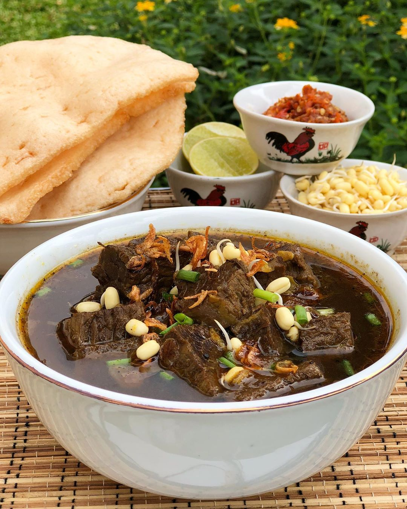
Rawon
Makanan khas Surabaya ini terdiri dari potongan daging sapi yang disajikan bersama nasi panas dan taburan kecambah,
lengkap dengan kuahnya yang berwarna kecoklatan. Rawon memiliki rasa yang gurih dan makin nikmat jika disajikan selagi panas.
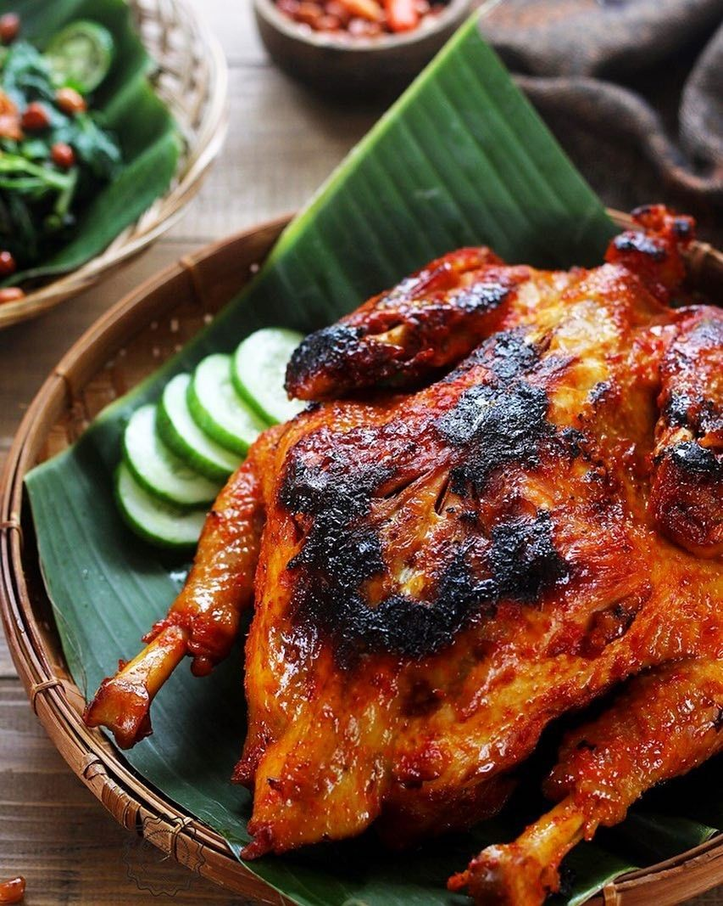
Ayam Taliwang
Makanan pertama yang wajib kami coba saat traveling adalah Ayam Taliwang. Ayam Taliwang adalah salah satu makanan Indonesia yang
kenikmatannya tidak perlu dipertanyakan. Makanan yang dibuat dengan bahan dasar daging ayam kampung ini dimasak dengan menggunakan
bumbu-bumbu khas Indonesia seperti cabai merah, bawang putih, tomat, gula merah, terasi, kencur dan masih banyak lagi yang lainnya.
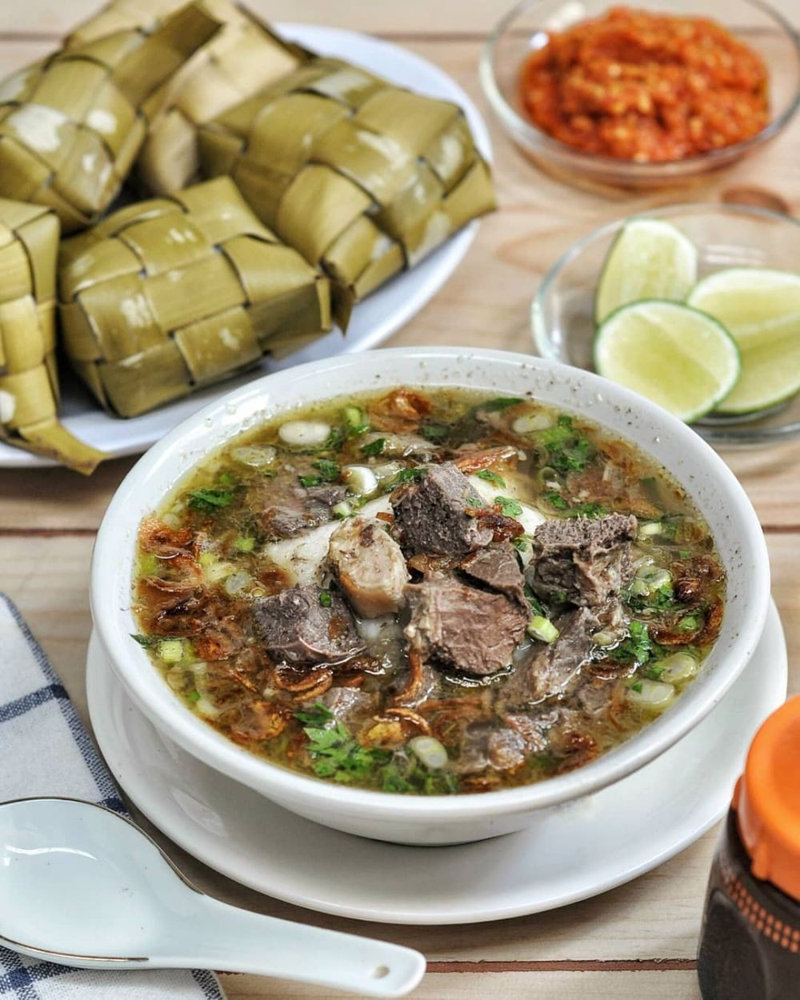
Coto Makassar
Makanan selanjutnya adalah Coto Makassar. Sesuai namanya, Coto Makassar adalah sebuah makanan khas Makassar yang sangat nikmat rasanya.
Kelebihan yang dimiliki oleh Coto Makasar ini bisa dirasakan dari kuahnya yang memiliki bumbu yang unik. Kuah dari Coto ini seperti memiliki
bulir-bulir yang membuatnya menjadi makin istimewa. untuk isiannya, Coto Makassar biasanya dibuat dengan menggunakan jeroan sapi atau bisa juga
diisi dengan daging sapi.
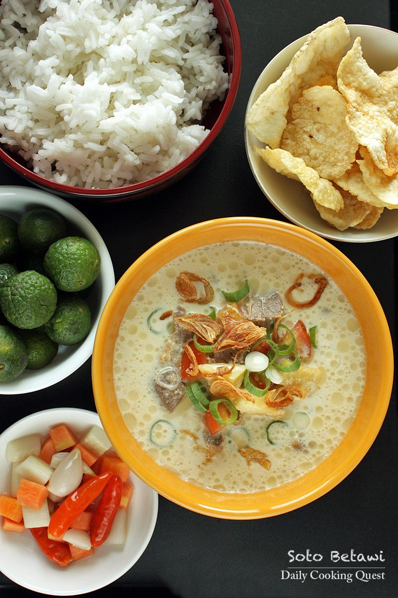
Soto Betawi
Makanan kuah di Indonesia memang sangat nikmat rasanya, uniknya, meski sama-sama berkuah ada saja yang membedakan satu sama lain sehingga membuat
kuliner di Indonesia menjadi makin kaya. Salah satu makanan berkuah lain dari Indonesia yang wajib kamu coba adalah Soto Betawi. Soto Betawi
merupakan sebuah hidangan soto yang memiliki kuah yang yang tidak bening. Kuah ini tidak bening karena dibuat dari air dengan campur santan dan juga susu.
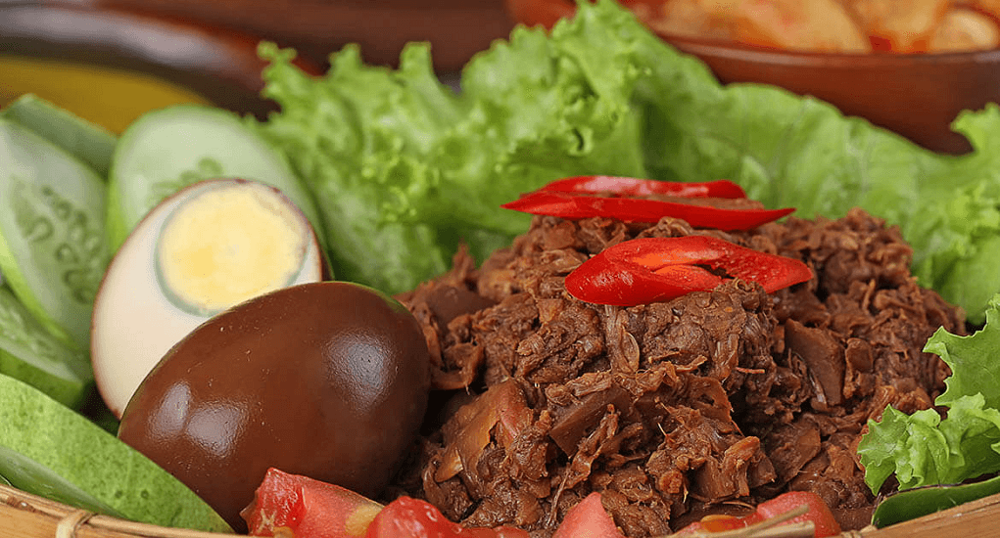
Gudeg
Rasanya belum lengkap kalau ke Jogja belum mencoba kuliner yang satu ini. Gudeg sendiri merupakan kuliner yang dibuat dari nangka
muda yang dimasak dengan santan hingga warnanya menjadi kecoklatan. Rasa khas dari gudeg sendiri adalah manis dan gurih.
Namun jangan khawatir untuk kamu pecinta rasa pedas. Kamu tetap bisa menambahkannya dengan sambal yang pastinya akan menambah
nafsu makan kamu.
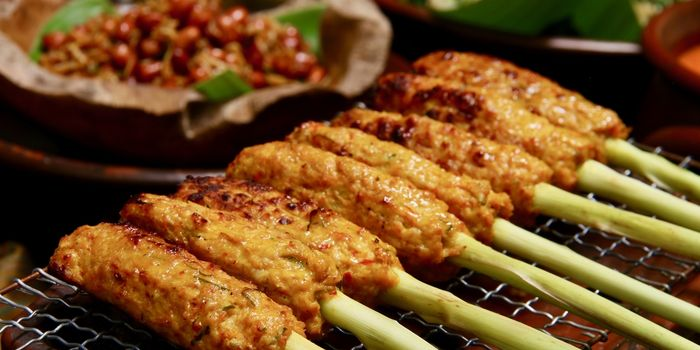
Sate Lilit Khas Bali
Kalau yang satu ini merupakan kuliner khas Bali nih. Sate ini awalnya memang berasal dari daerah Klungkung saja. Namun seiring dengan
meningkatnya popularitas dari sate ini, sekarang Sate Klungkung sudah banyak dijual di berbagai tempat di Bali seperti Denpasar,
Badung, dan Gianyar. Sate lilit Klungkung terbuat dari daging ikan tuna yang dilumatkan dan dimasukkan ke dalam adonan.
Kemudian dibakar dengan sebelumnya dibaluri bumbu dengan aroma kunyit dan serai yang kuat.
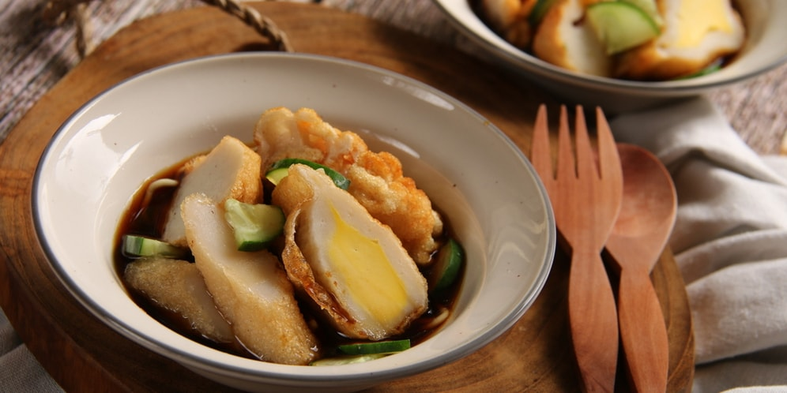
Pempek Palembang
Pempek terbuat dari daging ikan seperti ikan tenggiri dan sagu, kemudian ditambahkan telur. Pempek ada yang berjenis kapal selam, lenjer, dan adaan.
Yang khas, pempek disajikan dengan saus khusus yang bernama cuka. Orang Palembang menyebutnya cuko. Cuko terbuat dari campuran gula merah, cabai,
bawang putih, garam, dan udang ebi.
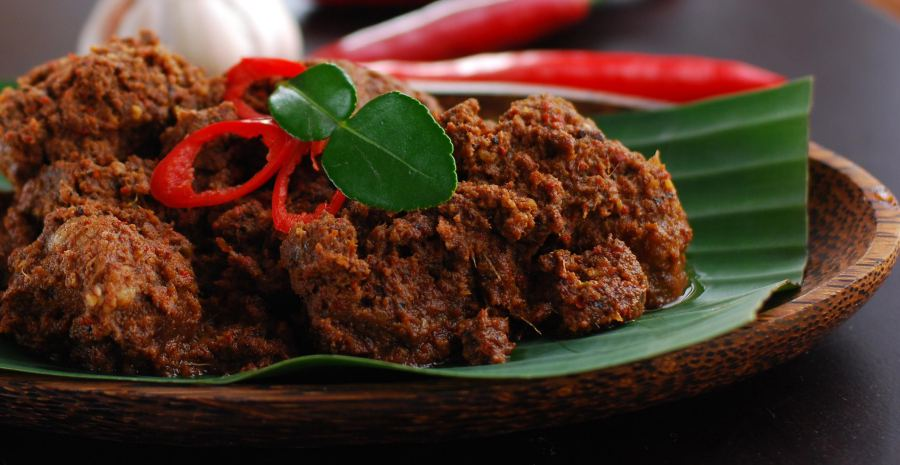
Rendang
Tak perlu diragukan lagi, rendang merupakan masakan yang sangat enak. Bahkan, telah dinobatkan sebagai makanan paling enak di dunia.
Kelezatan daging rendang dipengaruhi pada proses pembuatannya, yang dipanaskan berulang-ulang dengan santan kelapa. Proses memasaknya
butuh waktu berjam-jam hingga kering dan berwarna hitam pekat.
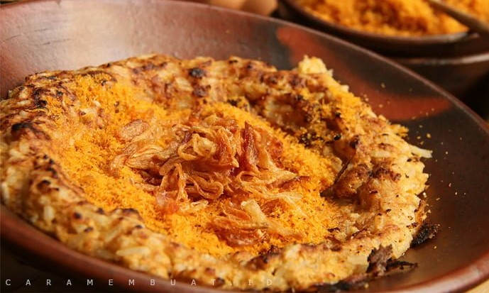
Kerak Telor
Kerak telor merupakan makanan khas Betawi yang sering juga disebut sebagai omeletenya orang Betawi. Kerak telor merupakan makanan yang terbuat
dari beras ketan dan telur yang kemudian disajikan bersama serundeng juga topping lainnya. Kerak telor umumnya dimasak menggunakan wajan dan
dinikmati saat masih hangat agar rasa gurihnya semakin menggugah selera.
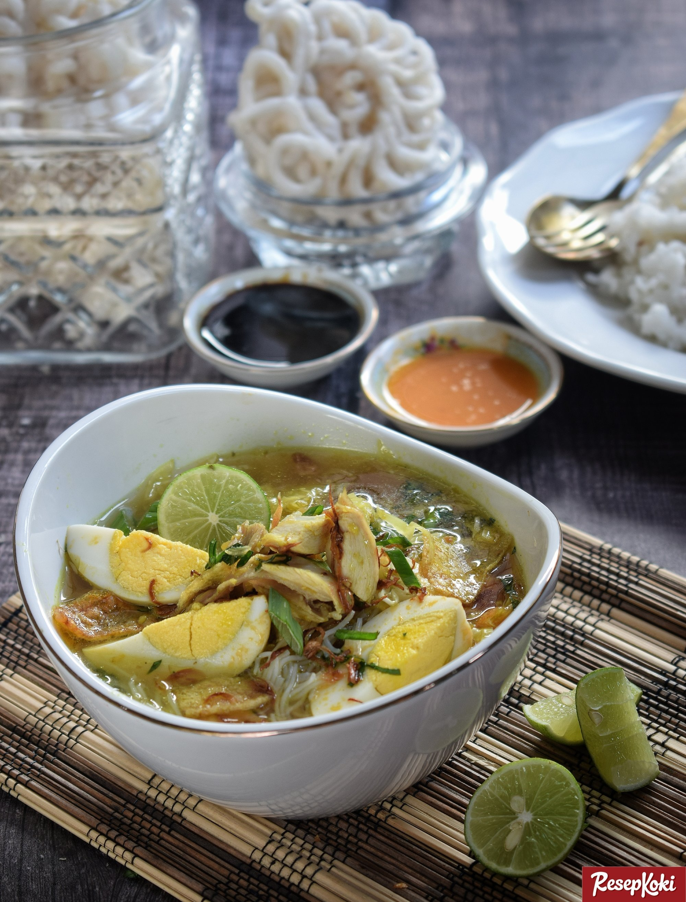
Soto Lamongan
Selanjutnya adalah soto Lamongan. Soto ini juga memilih keunikan dari segi kuah ny. Kuah dari soto Lamongan memiliki warna kuning dengan isian berupa ayam kampung,
soon dan juga kubis. Uniknya lagi soto ini biasa dihidangkan dengan menggunakan koya yang dapat membuat kuah menjadi lebih kental. Meski merupakan makanan kuah yang panas,
Makanan khas Indonesia yang wajib kamu coba ini akan membuat tubuh kamu terasa segar setelah memakannya.
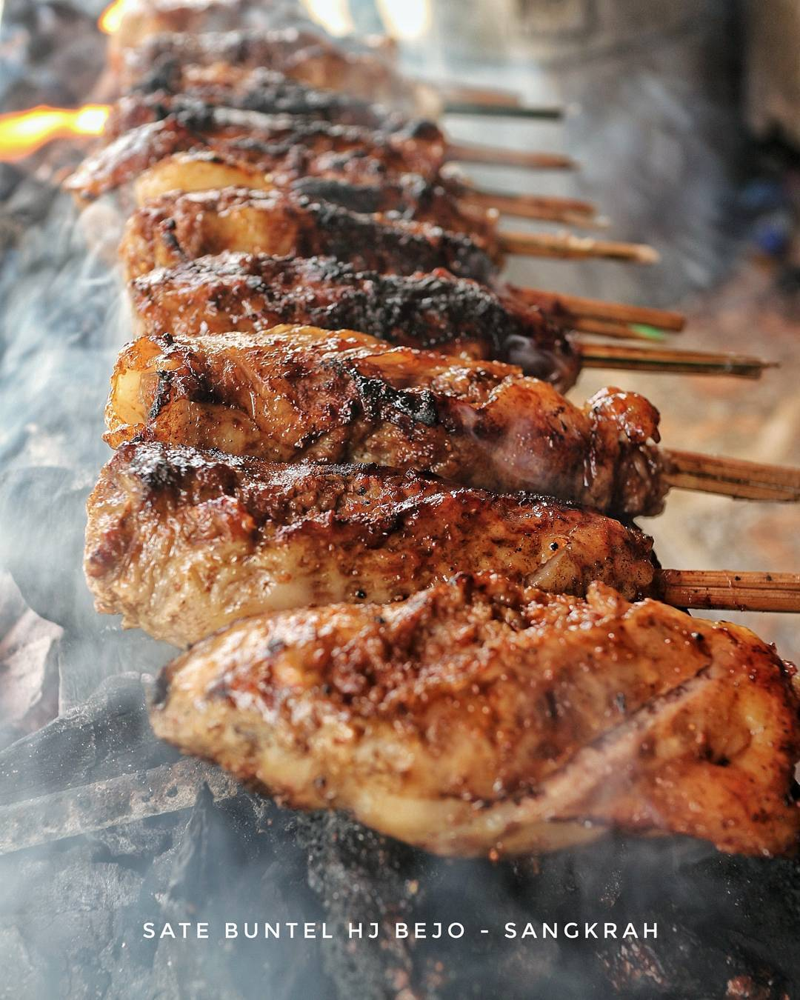
Sate Buntel
Sate buntel terbuat dari daging kambing cincang berbalut lemak kambing dan kemudian dibakar. Buntel sendiri merupakan kata dalam Bahasa Jawa yang artinya bungkus.
Salah satu penjual sate buntel paling terkenal di Solo adalah Sate Kambing Bu Hj. Bejo. Warung juga ini menjual berbagai macam olahan kambing,
termasuk menu tongseng buntel yang populer. Saking enaknya, tempat ini menjadi salah satu kuliner favorit Presiden Joko Widodo.
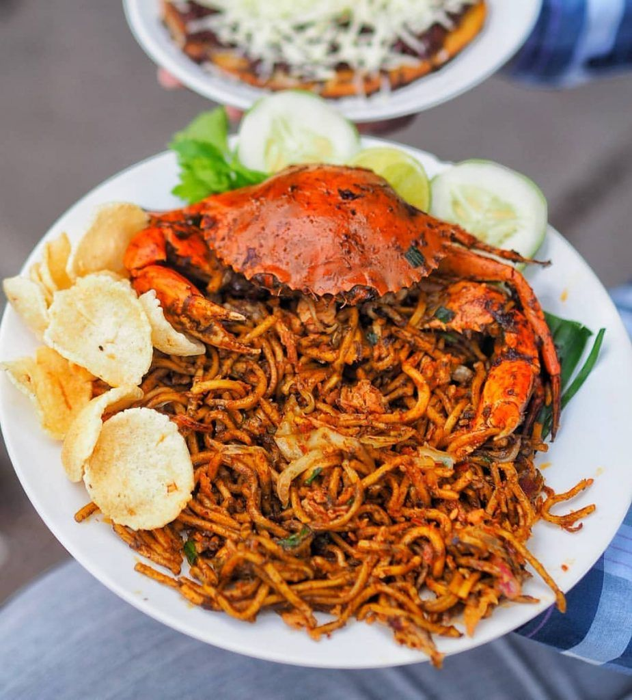
Mie Aceh
Siapa yang tak kenal mie ini, dengan cita rasa pedas menggoda berwarna kekuningan hampir merah membuat Mie Aceh, satu jenis kuliner yang menggoda.
Mie Aceh dapat dicicipi dengan dua cara, yakni di goreng atau direbus alias menggunakan kuah. Untuk rasa bisa memilih sendiri, apakah ingin pedas atau tidak.
Sebagai variasi bisa meggunakan kepiting, daging atau seafood. Variasi inilah yang nanti menentukan nama mienya.
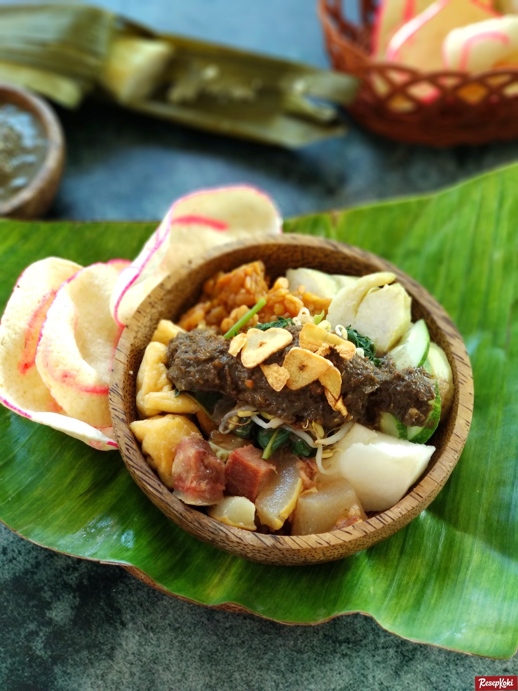
Rujak Cingur
Tampaknya ketenaran rujak cingur sudah seseantero Indonesia. Kamu yang mengunjungi Surabaya bisa dibilang belum benar-benar ke Surabaya jika belum mencicipi
makanan khas Surabaya yang satu ini. Rasakan lontong dan bermacam-macam buah serta sayuran yang disiram dengan bumbu kacang dan petis.